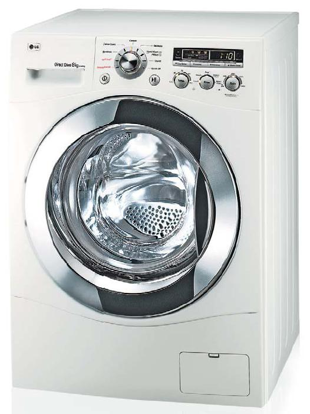

What is a Computer?

 |
|
|
Aims
- Describe what a Computer is
- Describe the uses of a Computer
- Identify the impact of Computers on the world
Reuse

This work is licensed under a Creative Commons Attribution-NonCommercial-ShareAlike 4.0 International License.
http://creativecommons.org/licenses/by-nc-sa/4.0/deed.en_USThis means you are free to copy and redistribute the material and adapt and build on the material under the following terms: You must give appropriate credit, provide a link to the license and indicate if changes were made. If you adapt or build on the material you must distribute your work under the same license as the original.
Note that this presentation contains images owned by others. Please seek their permission before reusing these images.
Your Thoughts
In groups, write down what you think a computer is?
Definitions
- Oxford Dictionary: An electronic device which is capable of receiving information (data) in a particular form and of performing a sequence of operations in accordance with a predetermined but variable set of procedural instructions (program) to produce a result in the form of information or signals.
- Free Online Dictionary of Computing: A machine that can be programmed to manipulate symbols. Computers can perform complex and repetitive procedures quickly, precisely and reliably and can quickly store and retrieve large amounts of data.
Types
What Types of Computer are there?
How to Classify Computers?
- Size
- Function
- Use
Size
- Embedded 
- Mobile
- Mobile Phone
- Tablet
- Laptop
- Microcomputer
- Desktop
- Minicomputer (Obsolete)
- Workstation (Microcomputer)
- Server (Boundary Case)
- Mainframe
- Supercomputer


Sizes
You can lose a phone down a drain if you dropped it
You can throw a laptop if you wanted to
You can lift a workstation if you need to
You can tilt a minicomputer if you need to
You cannot move a mainframe, even if you tried
Function
Computers can be grouped by their intended function.
- Server
- Workstation
- Personal Computing Devices
- Embedded
What do you use a computer for? At home, school, other places?
What does your family use a computer for?
What else could a computer be used for?
Home and Office Uses
- Games
- Office Work (Spreadsheets, Word Processing, Databases)
- Communication
- Information


World Uses
- Engineering Design and Automation
- Office Work (Spreadsheets, Word Processing, Databases)
- Communication Systems
- Medicine
- Science Research
- Infrastructure (Transport, Power, Water)
Who uses them?
- Scientists
- Engineers
- Doctors
- Artists
- Musicians
- Teachers
- Students
- Almost everyone (including you)
What does it mean for us?
Computers are now a part of daily life.
Modern science, engineering and medicine are dependent on computers for progress and operation.
Modern Communications rely on computers in many forms.
Increased availability of news and culture around the world.
Important that we understand the capabilities and limitations of computers
Important
Computers are tools.
People have to use them sensibly.
Don't use them for tasks they are not suitable for.
A Task for Next Time
- Write all the computers that you can identify.
- Put these computers into categories (size, use)
- Think about why you put them into a category